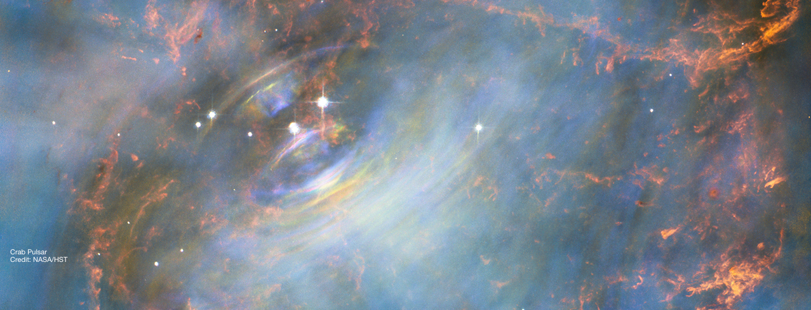

Stella Koch Ocker
Ph.D. Candidate in Astronomy
Cornell University
About Me
Research Interests
Curriculum Vitae
Contact

Research Interests
Fast Radio Bursts
Page under construction.
© Stella Koch Ocker. All rights reserved.
Design:
HTML5 UP